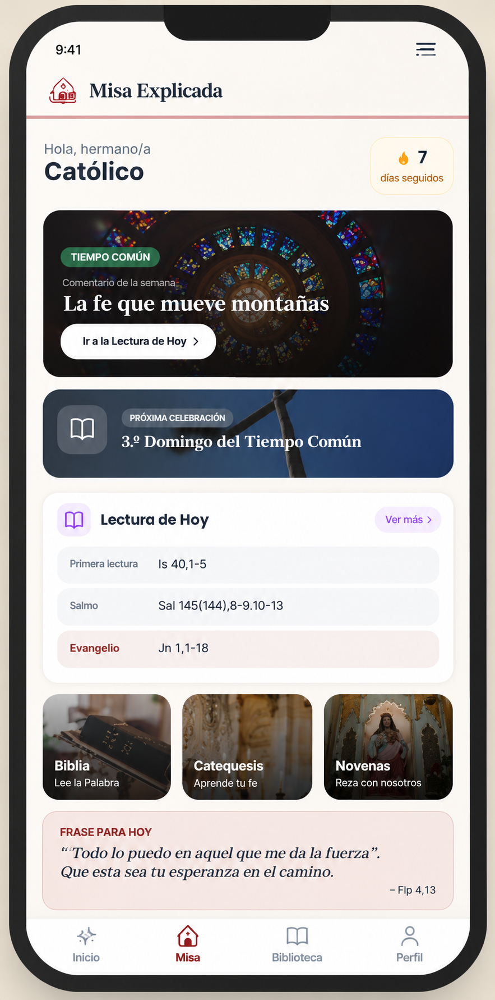

Mais um item que você pode somar ao seu pedido
Sua compra já está confirmada. Este é um item opcional — inclua no mesmo pedido agora, com uma cobrança nova, ou siga sem ele.
Item opcional
PREENCHER_PRECO_BR
Pagamento único · acesso imediato
Incluir este item gera uma cobrança nova, separada, no mesmo cartão que você acabou de usar. Não altera o pedido que você já pagou.
Não, obrigado — quero seguir sem este item
Abra esta oferta pelo link que chegou logo depois da sua compra — é esse link que carrega o seu pedido; sem ele não há o que incluir.
O app que te explica a Santa Missa de cada dia, com um clique só!
Domingo? Quaresma? Advento? O app te traz a reflexão do dia, o tempo litúrgico e as leituras explicadas em poucos minutos. A Santa Missa, com você, todos os dias.
